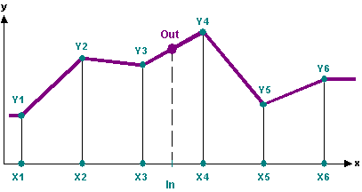
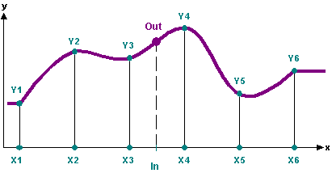
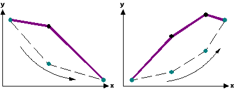
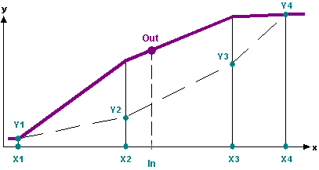
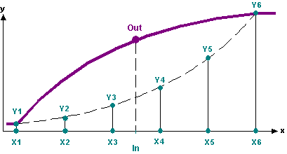
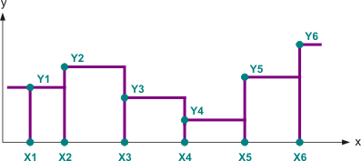
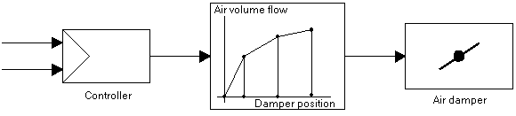

CHARFNCT: Characteristics
The CHARFNCT (FB457) block uses a characteristic curve (function) to calculate an output value for each input value.
This characteristic curve is defined by entering auxiliary points [Xn,Yn]. The type of interpolation between the auxiliary points can be selected:
- Linear
- Smooth
- Linear inverse
- Smooth inverse
- Stepped
Functionality
The block calculates the corresponding function from the parameterized characteristic curve [X1]/[Y1], ..., [Xn]/[Yn] and the defined type of interpolation [ChlinMod].
This function is used to calculate the output value [Out] for each input value [In].
Outside the function range defined by the auxiliary points, the output value corresponds to either the first or last auxiliary value.
Types of interpolation
[ChlinMod] = 1 (Linear)
This function carries out linear interpolation (straight-line) between the auxiliary points [Xn,Yn].

[ChlinMod] = 2 (Smooth)
This function conducts curve interpolation between the auxiliary points [Xn,Yn].

[ChlinMod] = 3 (Linear inverse)
Inverted function of [ChlinMod] = Linear
The characteristic curve must not be fully monotonous (rising or falling, not constant, not rising, and not falling).


[ChlinMod] = 4 (Smooth inverse)
Inverted function of [ChlinMod] = Smooth
The characteristic curve must not be fully monotonous (rising or falling, not constant, not rising, and not falling).

[ChlinMod] = 5 (Stepped)
The block searches the next smaller auxiliary point [Xi] for the input value and outputs its function value [Yi] on the output. When input value [In] is less than [X1], [Y1] is outputted. The step function is defaults as the number NumVldXY value pairs [X,Y] - of the auxiliary points. There is not interpolation between the auxiliary points.

Inputs
Pin | E | Description | |
In | pa | Input | |
ChlinMod | px | Characteristic curves and linearization mode. | |
1 (Linear) | This function carries out linear interpolation (straight-line) between the auxiliary points [Xn,Yn]. | ||
2 (Smooth) | This function conducts curve interpolation between the auxiliary points [Xn,Yn]. | ||
3 (Linear inverse) | The characteristic curve must not be fully monotonous (rising or falling, not constant, not rising, and not falling). | ||
4 (Smooth inverse) | The characteristic curve must not be fully monotonous (rising or falling, not constant, not rising, and not falling). | ||
5 (Stepped) | The block searches the next smaller auxiliary point [Xi] for the input value and outputs its function value [Yi] on the output. When input value [In] is less than [X1], [Y1] is outputted. The step function is defaults as the number NumVldXY value pairs [X,Y] - of the auxiliary points. There is not interpolation between the auxiliary points. | ||
NumVldXY | pa | Number of valid sample points X, Y. | |
X1..X10 | pa | Auxiliary point X1..10. Required value. | |
Y1..Y10 | pa | Auxiliary value Y1..10. Required value. | |
Outputs
Pin | E | Description |
Out | a | Output. |
Input values
Pin | Description | Data type | Default value | E.g. Engineering unit or Text group | Min. | Max. |
In | Input | Real | 0.0 |
| -3.403E38 | 3.403E38 |
ChlinMod | Characteristic curves and linearization mode. | Multistate | 1 (Linear) | Char mode | 1 (Linear) | 5 (Stepped) |
NumVldXY | Number of valid sample points X, Y. | Integer | 10 |
| 1 | 10 |
X1..X10 | Auxiliary point X1..10. | Real | 0.0 |
| -3.403E38 | 3.403E38 |
Y1..Y10 | Auxiliary value Y1..10. | Real | 0.0 |
| -3.403E38 | 3.403E38 |
Output values
Pin | Description | Data type | Default value | E.g. Engineering unit or Text group | Min. | Max. |
Out | Output | Real | 0.0 |
| -3.403E38 | 3.403E38 |
Application
[ChlinMod] = 1 (Linear)
[ChlinMod] = 2 (Smooth)
This block typically is used to correct the room setpoint in dependence of the outside air temperature in air conditioning plants (summer/winter compensation).
[ChlinMod] = 3 (Linear inverse)
[ChlinMod] = 4 (Smooth inverse)
Compensation of non-linear characteristics in air treatment plants to improve overall control response represents a typical application.
Example
Linearization of the characteristic curve of the non-linearity between damper position < > volume flow of an air damper:

The manipulated variable of the volume flow controller influences the non-linear actuating device "air damper". The chain "controller + linearization + air damper" exhibits a near-linear response, as inverting the characteristic curve compensates for the non-linear features.
Process response
(2 cycles)
Troubleshooting
The block creates an error message:
- If the number of auxiliary points is smaller than 2 and greater than 10.
- If the auxiliary point X[i] >= X[i+1].
- If the characteristic curve entered for "Linear inverse" or "Smooth inverse" interpolation is not monotonous (rising or falling, not constant, not rising, and not falling at the same time).
In these cases, [Out] = 0.0 is the output value at the block.